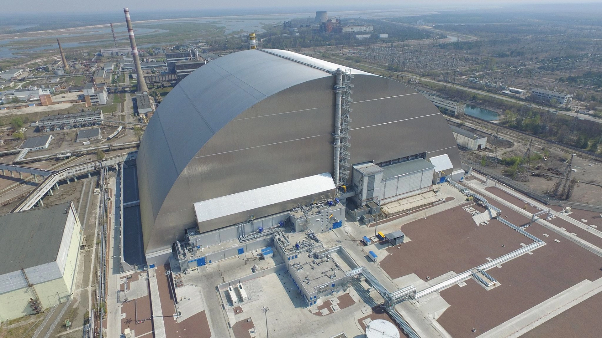
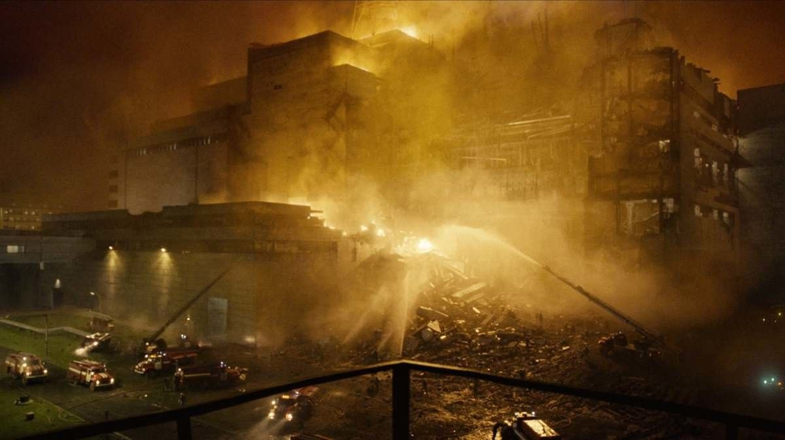
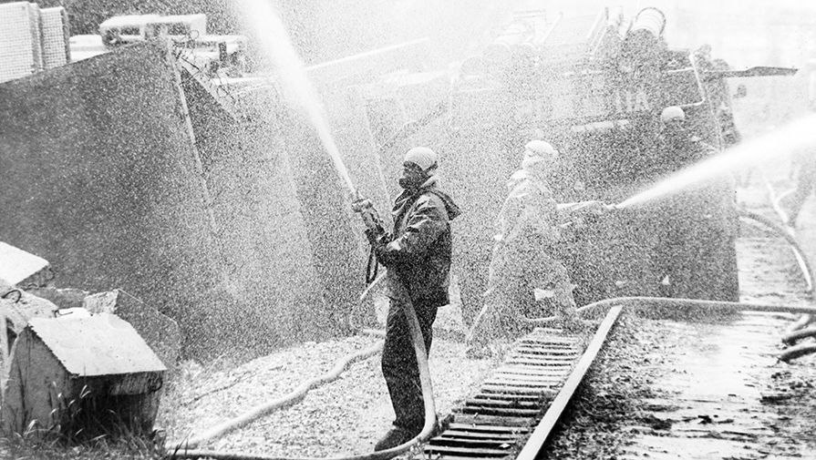
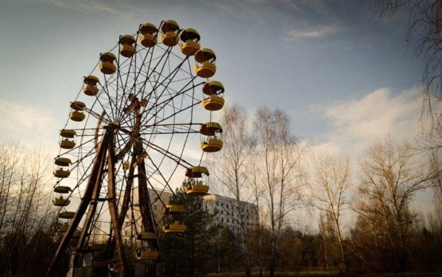
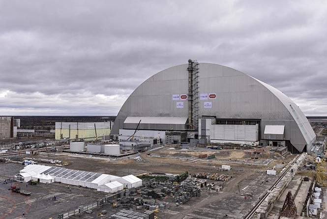
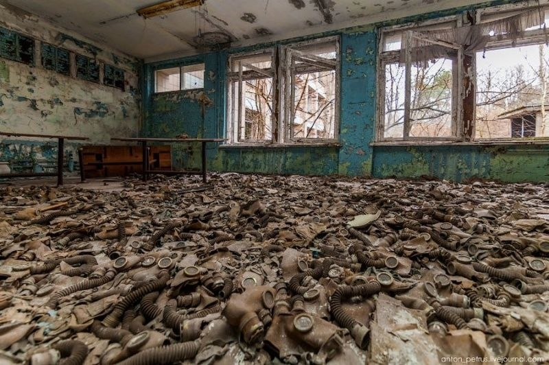
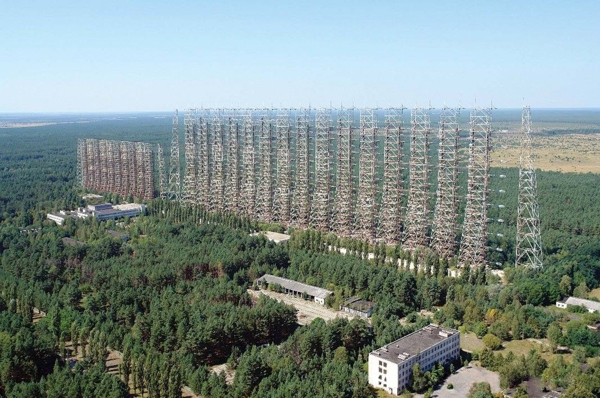
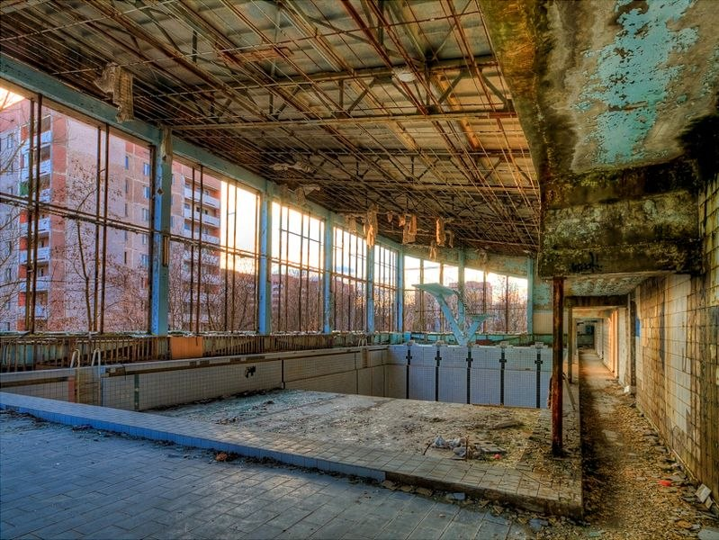
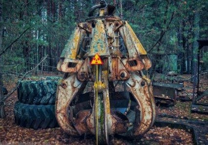

26 апреля 1986 года мир навсегда изменился. Авария на Чернобыльской АЭС стала крупнейшей ядерной катастрофой в истории человечества, создав 30-километровую Зону отчуждения.
Общая информация и история
Припять — это самый известный в мире город-призрак, ставший главным символом и живым памятником Чернобыльской катастрофы. Основанный в 1970 году как образцовый советский атомоград, всего за шестнадцать лет он превратился из динамичного и комфортного города для работников атомной электростанции в полностью заброшенную зону отчуждения.
Город строился в рекордные темпы рядом с Чернобыльской АЭС, примерно в трех километрах от самих энергоблоков. На момент аварии средний возраст жителей Припяти составлял всего около 26 лет, поэтому город справедливо называли «городом молодежи».
Город был основан 4 февраля 1970 года. Население на апрель 1986 года состовляло около 49 360 человек, а эвакуация населения началась 27 апреля 1986 года.
Хронология катастрофы
- 1970–1986 годы
В 1970 году началось строительство города Припять как образцового советского атомограда, который должен был стать
комфортным домом для работников строящейся Чернобыльской атомной электростанции. За шестнадцать лет активного развития
небольшой поселок превратился в современный город с населением почти в пятьдесят тысяч человек, широкими проспектами,
Дворцами культуры, школами и развитой инфраструктурой.
- 26 апреля 1986 года
26 апреля 1986 года мирная жизнь города была навсегда разрушена из-за катастрофического взрыва на четвёртом энергоблоке
Чернобыльской АЭС. Произошел мощный выброс радиоактивных веществ, который накрыл Припять опасным облаком, но в первые
часы город продолжал жить обычной жизнью, пока власти оценивали масштабы аварии.
- 27 апреля 1986 года
27 апреля 1986 года была объявлена экстренная эвакуация населения, для которой задействовали колонну из 1200 автобусов. Жителям объявили, что они уезжают всего на три дня, поэтому люди оставляли квартиры открытыми, забирая лишь документы и минимум вещей, после чего город опустел навсегда.
- 1986–наши дни

Начало катастрофы
В ночь с 25 на 26 апреля 1986 года yа 4-м энергоблоке Чернобыльской атомной электростанции имени В. И. Ленина проводились плановые испытания турбогенератора, которые должны были проверить надежность систем питания в аварийных условиях. Однако из-за конструктивных недочетов реактора РБМК-1000 и цепочки критических ошибок персонала ситуация стремительно вышла из-под контроля. В 01:23:40 (по МСК) началась цепь неуправляемых реакций, приведших к двум мощнейшим тепловым взрывам. Они полностью разрушили активную зону, сорвали двухтысячную защитную плиту и обрушили кровлю машинного зала, выбросив в атмосферу колоссальное количество радиоактивных изотопов.
Первыми на место трагедии прибыли бойцы пожарной части под командованием лейтенанта Владимира Правика. Не имея ни малейшего представления о масштабах ядерной угрозы и защитных средств, они приступили к тушению пожара на крыше реакторного отделения. Внутри самого блока царил хаос: приборы зашкаливали, а персонал был дезориентирован. При этом жизнь в соседнем городе энергетиков — Припяти — продолжалась в привычном ритме. Утром 26 апреля дети резвились на улицах, работали школы и магазины, пока невидимое радиоактивное облако уже оседало на крышах и дорогах.
Руководство Советского Союза попыталось скрыть масштабы трагедии, чтобы не омрачать первомайские демонстрации, но мощный выброс радиации вскоре зафиксировали в Европе (первыми тревогу забили на шведской станции Форсмарк). Лишь 28 апреля появилось первое официальное сообщение в СМИ, а к ликвидации последствий приступила правительственная комиссия во главе с Борисом Щербиной и академиком Валерием Легасовым. Днем 27 апреля началась экстренная эвакуация Припяти: жителям объявили, что они уезжают всего на три дня, но колонна из 1200 автобусов увезла их навсегда.

Последствия аварии превзошли все известные техногенные катастрофы. Радиоактивное облако накрыло значительную часть Европы, а суммарный выброс радиации в сотни раз превысил показатели бомбардировки Хиросимы. В первые месяцы от острой лучевой болезни скончался 31 человек, включая пожарных и оперативный персонал, а сотни тысяч ликвидаторов со всего СССР ценой своего здоровья возвели над руинами бетонный саркофаг. Вокруг станции была создана 30-километровая зона отчуждения, превратившая цветущий регион в безлюдный постапокалиптический памятник человеческой ошибке.
СВОДНЫЕ ДАННЫЕ И ПОСЛЕДСТВИЯ
- Тип происшествия: Ядерная катастрофа 7-го уровня (шкала INES).
- Дата и время: 26 апреля 1986 г., 01:23 МСК.
- Загрязненная территория: > 200 000 км².
- Эвакуировано: ~115 000 человек (из Припяти 49 360 чел.).
- Ликвидаторы: ~600 000 участников (1986-1992 гг.).
- Текущий статус: ЧАЭС остановлена, НБК функционирует.
Город-призрак Припять
Основанный в 1970 году как город атомщиков, Припять был одним из самых комфортабельных и перспективных городов СССР. В городе работали 5 школ, 15 детских садов, ДК «Энергетик», кинотеатр, больница, множество магазинов и кафе.
Всё это осталось нетронутым. Через 36 часов после аварии, 27 апреля, началась срочная эвакуация. Жителям было приказано взять с собой только документы и самые необходимые вещи, так как они были уверены, что возвращение домой произойдет через три дня (по заявлению властей). Но они уехали навсегда.

Колесо обозрения в Припяти
Главный визуальный символ Припяти. Парк планировали открыть 1 мая 1986 года, но из-за аварии и эвакуации колесо так и не
приняло ни одного посетителя.
Аттракцион успели смонтировать и даже протестировать перед первомайскими праздниками, но официальное открытие так и не
состоялось из-за аварии.

Новый безопасный конфайнмент (Арка) над 4-м энергоблоком
Самое дорогое инженерное сооружение зоны, построенное в 2016–2019 годах для изоляции разрушенного блока и предотвращения
утечек радиации.
Сооружение весом более 36 тысяч тонн собирали на безопасном расстоянии от станции, а затем аккуратно наддвинули на
старый саркофаг по специальным рельсам. Оно рассчитано на защиту объекта от разрушений в течение
следующих ста лет.

Класс с противогазами в школе Припяти
Одно из самых жутких постановочных зрелищ для туристов. Эти респираторы были частью обязательных запасов гражданской обороны на случай ядерной войны. Позднее сталкеры, мародеры и туристы перекладывали их ради кадров, создавая пугающие инсталляции из советского прошлого.

РЛС «Дуга» («Русский дятлов»)
Секретный советский загоризонтный радиолокатор времён Холодной войны, предназначенный для раннего обнаружения пусков
межконтинентальных ракет.
В период Холодной войны станция излучала мощные радиосигналы, которые издавали характерный потрескивающий звук на
коротких волнах по всему миру. За эту особенность зарубежные радиолюбители прозвали объект «Русским дятлом».

Бассейн «Лазурный»
Спортивный комплекс продолжал работать для оставшихся жить и работать в регионе специалистов ещё долгое время после эвакуации Припяти. Он служил важным центром социальной жизни для ликвидаторов, поддерживавших станцию в рабочем состоянии. Бассейн активно использовался вплоть до 1996 года.

Ковш экскаватора (Так называемый «Ковш Смерти»)
Этот ковш использовался для расчистки завалов радиоактивного мусора и графита, из-за чего сам накопил смертельную дозу радиации. Долгое время он оставался популярной точкой для сталкеров, пока его не убрали вглубь промзоны из-за опасности для здоровья.
Чернобыльский фольклор
Вокруг Зоны отчуждения сложился обширный пласт историй и городских легенд. Эти рассказы подпитываются постапокалиптической атмосферой и изоляцией территории.
Черный Ворон (Черная Птица Чернобыля)
В дни перед авариями и сразу после нее сотрудники станции и жители Припяти, включая замдиректора Анатолия Дятлова, описывали встречу с загадочным существом. Эта огромная черная птица с красными глазами и размахом крыльев в несколько метров будто бы кружила над реактором, предвещая беду.
Мутанты-гиганты и подземные монстры
Фольклор Зоны богат рассказами о сверхразмерных сомах в охладительных прудах, двухглавых волках и загадочных мутантах, обитающих в глубоких подземных бункерах и закрытых лабораториях.
Выжигатель мозгов (РЛС «Дуга»)
Из-за секретного статуса радиолокационной станции и странных звуков в эфире появились слухи, что объект использовался для психотронного воздействия на людей или управления сознанием.
Фантомные жители
Среди сталкеров и охраны популярны истории о том, как в пустых квартирах Припяти ночью слышатся детские голоса, шаги, звуки обычного быта или видятся тусклые силуэты в окнах некогда заселенных домов.